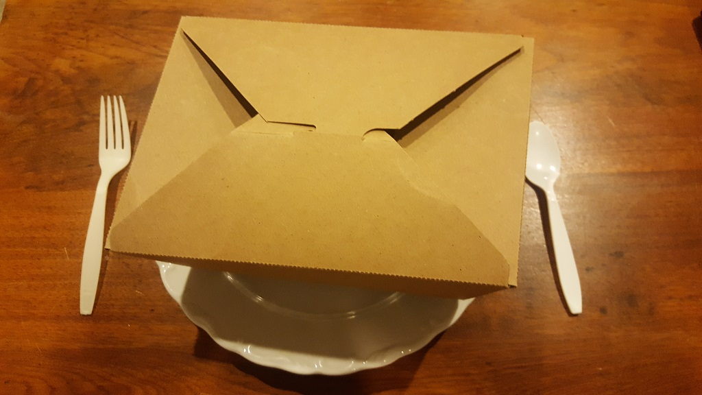

Some people don't like leftovers. I don't get that. Well, I guess if it was homemade then I get that. But to me, leftovers means "leftover from a restaurant the night before," which to me is a treat. When we decide if the girls should split a meal, I always so "No, cause they could always have the rest for dinner tomorrow." My wife and I both know that I will be the one eating it the next day.
Preparation
Get out the leftovers from the fridge.
Steps
Put the leftovers into the microwave. Turn on for 2 minutes or until you hear awful popping sounds. No plate is necessary, serve right out of the carryout box to avoid washing a dish.
Back to Greatness